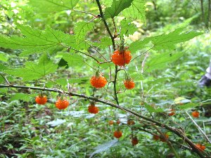
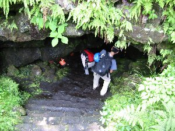
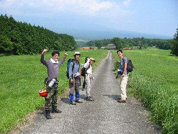

洞窟探検 | ２００３年６月２１日 |
|---|---|
| 梅雨の晴れ間の土曜日、六人のメンバーが洞窟探検に挑みました。 な〜んて、そんな大それたものでは無いのですが、山梨県の洞窟に行って来ました。 洞窟と言っても色々あり、初心者の我々は危険度が少なそうな所にお出かけです。 まずは足慣らしならぬ洞窟ならし、「人穴」という比較的観光洞的な洞窟の近くにある「新穴」を目指します。 地図上で近くだと思われる林の中に車を止め、携帯GPSを頼りに森の中に入ります。 森の中は木イチゴや桑の実で一杯です！黄色い木イチゴはとても甘く美味しいです。 草をかき分け、林を抜けながら木イチゴを探しては食べ、舗装してある普通〜〜〜の道に出ました。（どこ、ここ？？） そこで地元のおじさんに道を尋ねると、以外にも新穴は人穴の近くだと言うこと。 「人穴の横を通って行けば良いんだ」みたいな言葉に、『なぜ我々は森の中を抜けてきたのか？人穴はちゃんと駐車場まで有るではないか！』 単に遠回りをしたに過ぎない気がするが、ここに来るまでに既に探検気分を味わってしまった。観光洞で探検できるとはお手軽な・・・・ | |
|  木イチゴ一杯！これでジャムを作りたいね |  道無き道をGPS頼りに突き進む！ |
| ついでと言うことで、人穴にも入りました。沢山の人がいる観光洞的なこの洞窟に、ヘルメットとヘッドライトを持った数人のメンバーは異様です。 中はロウソクの明かりだけが灯り、天井からは水が滴り落ちてきます。歩くところには板が引いてあるのですが、暗闇に慣れない目では踏み外す危険度大！事実、踏み外して下の水たまりに足を落とした人がいます！ 次は目的地の新穴へ。ここもおじさんの言ったとおりに真っ直ぐ行けば良いものを、なぜか途中から「こっちだよ！」と脇にそれる。そして迷う。 GPSを持っているのだからそれを信じれば良いと思うのだが、「（手持ちの）資料に書いてある目的地の位置が（緯度経度）違うんじゃない？」等、あくまで自分を信じるメンバーは正しく道をそれるのです！（これが面白いんですけどね♪） やっとの事で見つけた洞窟の前で軽く昼食。 この新穴も結構一般の人が入るらしいのだが、本日は誰もいない。所々にロウソク立ては有るものの、ロウソクはない。真っ暗！ 天井から水がしたたり落ちる中を、前の人の背中を見ながら前進。 中は大きい空洞があり、そこから人がすんなり通れるほどの、筒状の通路が延びている。 ホントに誰かが掘ったんでは無いかと思うほどトンネル状になっている。ここを昔、溶岩が流れたんだな〜と思うと、なんかすごいです。 最深部は腰をかがめなければ行けないくらいになり、そこから引き返します。資料によるとこの洞窟の長さは１５０ｍ位だそうです。 | |
|  観光洞的な人穴。なのにこの装備！ |  中は真っ暗な新穴へ突入！ |
| 新穴を出てもう一つ近くにある洞窟を探すも、GPSがどーも民家の敷地内を指すので、そこの民家を訪ねるも留守らしく断念！ さて、途中の探検で時間を食った我々ですが、本来の大目的地「犬涼み山風穴第５」を目指します。 しかーし、ここは一般車が立ち入れない林道になっていて、ゲート前で立ちすくむメンバー。車は入れないが歩いて行けば良いと思うけど、時間が既に遅く明るいうちに帰って来れないと判断し今回は見送ることに。（残念！） 目標の洞窟をあきらめ、時間も遅いので次回の下見を兼ねて「三ツ池穴」に立ち寄ってみた。 ここは個人所有の土地の中に有るので許可を取らねばならないのだが、その持ち主曰わく、「学術調査以外はちょっと・・」って事らしい。何せ管理は県だががしていると言うから。天然記念物的なものも有るそうです。 何にせよ、次回の穴に向かって鋭気を養うべく、アイスクリームを食べ、温泉に浸かり、高血圧だかに効果のある水を飲み、今回の探検は終了となりました。 次回は絶対「犬涼み山風穴第５」行くぞ！！ | |
 もう一杯一杯です〜 |  いや〜のどかな風景ですね。 なに、この人たち・・・ |